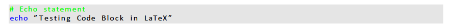

Inserting a LaTeX code block 13-09-17
I was working on a LaTeX report recently describing how to transfer feature annotations between
genomes. I'd never done this before, and when I worked it out I wanted to write it down so that
it was easier for others and myself in the future.
Below is the code that I used in my LaTeX script to insert some BASH code that I used:
%%%% Header Block %%%%
% Load the necessary libraries
\usepackage{xcolor} % Colours for key words
\usepackage{listings}% Package for code block
% Add some key words for the specified language
\lstdefinelanguage{bashPlusKeyWords}{
language = bash,
morekeywords = {sudo,mv,mkdir}
}
% Set up the style for the code block
\lstset{
basicstyle=\ttfamily,
basicstyle=\footnotesize,
showstringspaces=false,
commentstyle=\color{green},
keywordstyle=\color{blue},
backgroundcolor=\color{gray!20}
}
%%%% Insert code block in artile body %%%%
% Insert code block
\begin{lstlisting}[language=bashPlusKeyWords]
# Echo statement
echo "Testing Code Block in LaTeX"
\end{lstlisting}
% Load the necessary libraries
\usepackage{xcolor} % Colours for key words
\usepackage{listings}% Package for code block
% Add some key words for the specified language
\lstdefinelanguage{bashPlusKeyWords}{
language = bash,
morekeywords = {sudo,mv,mkdir}
}
% Set up the style for the code block
\lstset{
basicstyle=\ttfamily,
basicstyle=\footnotesize,
showstringspaces=false,
commentstyle=\color{green},
keywordstyle=\color{blue},
backgroundcolor=\color{gray!20}
}
%%%% Insert code block in artile body %%%%
% Insert code block
\begin{lstlisting}[language=bashPlusKeyWords]
# Echo statement
echo "Testing Code Block in LaTeX"
\end{lstlisting}
The above code will produce a code block in a LaTeX argument looking like this:
I'll note that the code block that I use here in HTML is pretty limited - a work in progress!